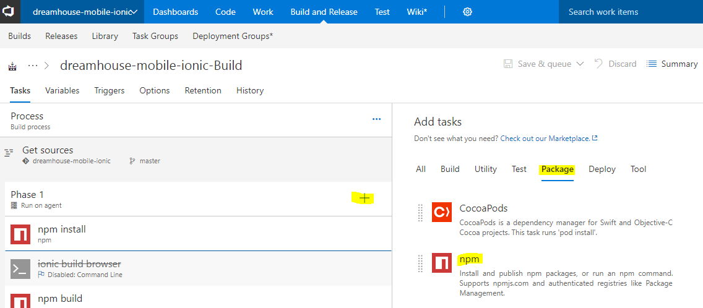
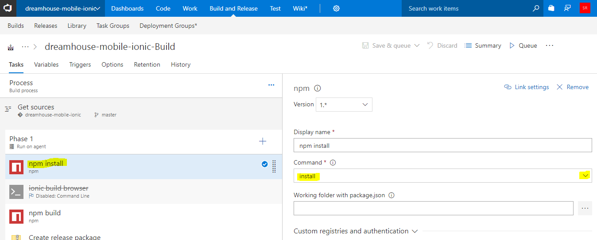
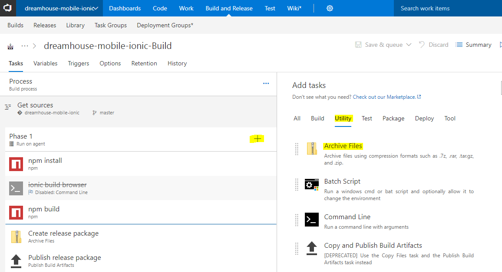
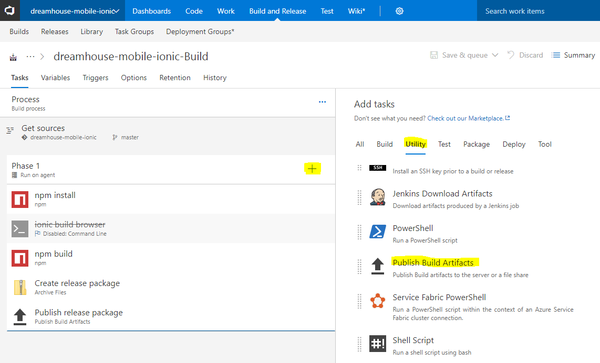
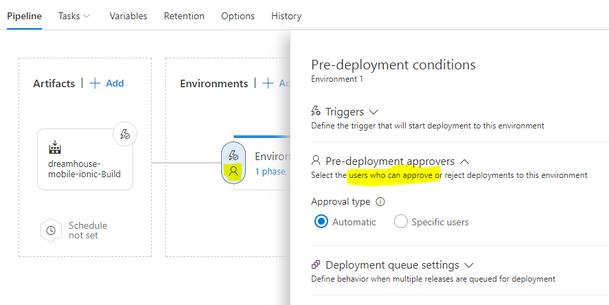
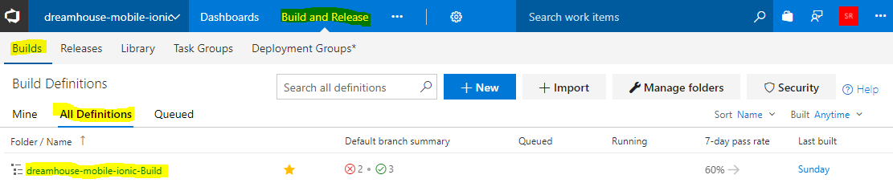
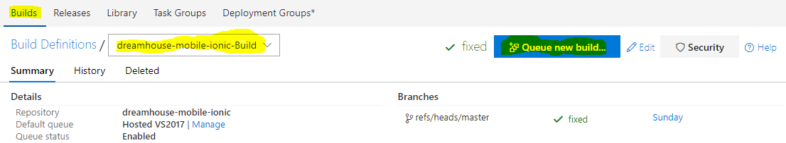
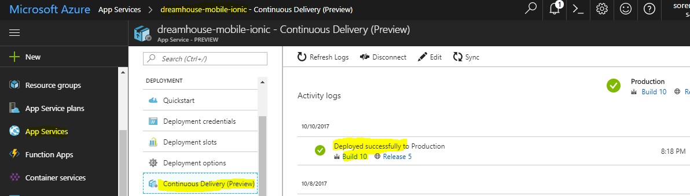

Deploying Express REST API to Azure
Posted on October 29, 2017 in DevOp Updated: October 30, 2017
This blog is part of a series.
- Deploying Ionic to Azure
- Deploying Express REST API to Azure
- Add Facebook Authentication to your Express REST API - Planned
In this blog I will deploy an Express REST API to Azure Mobile Apps.
The exercise is almost identical to Part 1 - Deploy Ionic to Azure, so in this blog I'll leave out the pictures.
Here is how to do
The Build server (VSTS)
Currently the build server (VSTS) is running
user-agent = "npm/3.10.10 node/v6.10.0 win32 x64".
So you should also build your API with node v6 or perhaps a bit lower. It is a bit like in .NET you would also want to build with a framework e.g. .NET 4.5.2 when the build server has .NET 4.7 - at least you don't get too big surprises when your code is build on the build server.
It should be possible to specify another node version with WEBSITE_NODE_DEFAULT_VERSION, though I haven't tried. Look for more info here.
Your local repo
So before you start deploy you should verify that your code can build for prod on node v6.
# If you got nvm switch to v6
nvm list
nvm use 6.11.4
# or just check that you have v6
node -v
# If you don't have v6 you might get surprises when you build in VSTS, but purhaps you won't.
If no errors then we can continue.
Your remote origin
I have forked dreamhouseapp/dreamhouse-rest-services by Christophe Coenraets (@ccoenraets) to rasor/dreamhouse-rest-services.
Why? Because I need to give VSTS access to my GitHub account. I can't give it access to @ccoenraets's repo.
You can fork mine, since it is modified a bit with web.config, making it runable in Azure.
BTW - You can read about @ccoenraets's code here: DreamHouse: Sample Application with Ionic 3 and Angular 4.
The web.config file you need for node.js projects running in IIS looks like this:
<?xml version="1.0" encoding="utf-8"?>
<!--
This configuration file is required if iisnode is used to run node processes behind
IIS or IIS Express. For more information, visit:
https://github.com/tjanczuk/iisnode/blob/master/src/samples/configuration/web.config
-->
<configuration>
<system.webServer>
<!-- Visit http://blogs.msdn.com/b/windowsazure/archive/2013/11/14/introduction-to-websockets-on-windows-azure-web-sites.aspx for more information on WebSocket support -->
<webSocket enabled="false" />
<handlers>
<!-- Indicates that the server.js file is a node.js site to be handled by the iisnode module -->
<add name="iisnode" path="server.js" verb="*" modules="iisnode"/>
</handlers>
<rewrite>
<rules>
<!-- Do not interfere with requests for node-inspector debugging -->
<rule name="NodeInspector" patternSyntax="ECMAScript" stopProcessing="true">
<match url="^server.js\/debug[\/]?" />
</rule>
<!-- First we consider whether the incoming URL matches a physical file in the /public folder -->
<rule name="StaticContent">
<action type="Rewrite" url="public{REQUEST_URI}"/>
</rule>
<!-- All other URLs are mapped to the node.js site entry point -->
<rule name="DynamicContent">
<conditions>
<add input="{REQUEST_FILENAME}" matchType="IsFile" negate="True"/>
</conditions>
<action type="Rewrite" url="server.js"/>
</rule>
</rules>
</rewrite>
<!-- 'bin' directory has no special meaning in node.js and apps can be placed in it -->
<security>
<requestFiltering>
<hiddenSegments>
<remove segment="bin"/>
</hiddenSegments>
</requestFiltering>
</security>
<!-- Make sure error responses are left untouched -->
<httpErrors existingResponse="PassThrough" />
<!--
You can control how Node is hosted within IIS using the following options:
* watchedFiles: semi-colon separated list of files that will be watched for changes to restart the server
* node_env: will be propagated to node as NODE_ENV environment variable
* debuggingEnabled - controls whether the built-in debugger is enabled
See https://github.com/tjanczuk/iisnode/blob/master/src/samples/configuration/web.config for a full list of options
-->
<!--<iisnode watchedFiles="web.config;*.js"/>-->
</system.webServer>
</configuration>
It seems like the web.confog is generated for you, when you choose Node.js as target environment during Release Definition in VSTS.
Your local repo
When you have forked a repo do:
git clone https://github.com/yourgithubusername/dreamhouse-rest-services
cd dreamhouse-rest-services
npm install # download node_modules
start "" "http://localhost:5000/properties" #start browser - this work in windows
node server # start webserver
# refresh browser (F5) if it timed out before the server was started
Build to drop folder in VSTS
- When you have created a VSTS account via Visual Studio VSTS browse to https://yourvstsusername.visualstudio.com/_projects
- Since you already have a build project from part 1, you can reuse that project and just create yet a build definion on:
https://yourvstsusername.visualstudio.com/dreamhouse-mobile-ionic/_build?path=%5C&_a=allDefinitions
or you can browse to there: PressBuild and ReleasethenAll Definitions. There you see your Build Definition for building your Ionic project. - press
+ Newto add a new Build Definition - more or less as you might be used to from TFS. - Choose an Empty process - meaning there are no build steps to start out with
- Now you need to connect to GitHub. Select
Get sourcesin left pane and selectRemote repoin right pane. You need to authenticate towards GitHub - go through that process.
Name:yourgithubusername_dreamhouse-rest-servicesRepo:https://github.com/yourgithubusername/dreamhouse-rest-servicesSet Clean totrue, so the source files from the Ionic build will be removed - Set clean options toSources
Notice - this is like when you did git clone locally - Just above
Get Sourcesthere isProcess- select it.
Name: dreamhouse-rest-services-Build
Agent Queue: Hosted VS2017 - So what did you do after git clone?
npm install. In Phase 1 press+and select npm task.  - Configure npm task by pressing the dropdown list and select
install
 - After install you started the browser and did
node server. But that was a development task - not a build task - So we ran out of steps locally, but on the build server we still need to package the build output and send it to Azure
Next task is a zip-task. Press+and selectArchive Files
 - Root folder is the build code you want to deploy. It is located in the
.\folder - just as when you work locally.
Unselect "Prefix root folder ..."
The name of the zipped package should be$(Build.ArtifactStagingDirectory)/$(Build.BuildId).zip - Final build step to do is to put the package in a drop folder
Next task is a publish task. Press+and selectPublish Build Artifacts
Notice - you can create PowerShell, Shell Script and Batch Script tasks. So if you npm installed a nice utility, you could then do anything with it in a script which could be in your code e.g. `.\scripts\runkarmaandprotractortests.cmd  - Path to publish is the zip file you created in last step
Artifact Name is the name of the drop folder. Call itdrop-rest, so it can't be confused with the Ionic drop.
And location must beTFS(opposed to File Share) - Press
Save & queue. In top of the screen you'll seeBuild #<some-number> has been queued. - Click on
#<some-number>. Now you can see the progress of the build.
When the build has finished you'll seeBuild Succeededand above thatdreamhouse-rest-services-Build / Build <some-number> / Phase 1 - Click on
Build <some-number>. Now you get 5 tabs for that build:Summary - Timeline - Artifacts - Code coverage* - Tests - Click on
Artifacts. Now you see the dropfolder. Check it out and see if it contains what you expected.
Have you noticed that these Build Tasks correspond to the features in TeamCity?
Next up is to deploy the package to Azure.
Setup WebApp in Azure
- When you have created a free Azure account via Microsoft Azure browse to Azure Portal
- In Part 1 you created a Resource Group e.g.
ResGroupNorthEurope. This is where all your stuff in Azure lives.
- This time you could also have chosen webapp as before, but Azure has another option called Mobile App. This has the option of offering Notifications and other MBaaS (Mobile Backend) services.
You find that underApp Services. Click+ AddthenFilter
EnterMobile Apps
Then you see a small selection of mobile apps - Select
Mobile App
Since I have already taken subdomain dreamhouse-rest-services you have to choose another one - e.g.yourvstsusername-dreamhouse-rest-services
Resourse Group: Use the one you created before:`Use Existing
App Service Plan is the Dyno in Heroku or EC2 in AWS - the size of your PaaS.
Resuse the one you created in Part 1 e.g.AppSvcPlanNorthEuropeWindows (Standard: 1 Small)
You're done in Azure. Next up is to release to Azure from VSTS.
Release to Azure from VSTS
- Go back to https://yourvstsusername.visualstudio.com/dreamhouse-mobile-ionic/_build
- You can deploy to many environments and services. This time we want to deploy to our Mobile App.
First step is to select that target environment in a Release
Click tabReleasesthen+-Create Release Definition- SelectDeploy Node.js App to App Serviceand click Apply
- Notice the ´!´ - something needs attention - click either of them

- Hey - that looks familiar - a list of steps in a task list - just as under tab
Build
Yes, but heading isEnvironment 1- notPhase 1. And for the environmet you have to connect to Azure. Azure subscription click on the drop down list to select the one you connected to in Part 1.
When connected you can click the dropdown list to select your mobile appyourvstsusername-dreamhouse-rest-services
- Head back to tab
Pipeline- we need to fetch a source to deploy
SelectAdd Artifactand select source type:Build, so we can fetch the zip file from drop.
Notice: Source type can also be:Git, GitHub, Jenkins and Team Foundation Version Control.
Project: Selectdreamhouse-mobile-ionic
Build Definition: Selectdreamhouse-rest-services-Build.
Notice that since you did a build before VSTS knows it createddrop-restAccept default values and press Add.
- Press the lightning icon on the Artifact.
- Enable Continous deployment. Notice the trigger is whenever a new drop has been made.

- Now that we have a source we can head back to
Tasks, selectDeploy Azure App Service - App Service name:
yourvstsusername-dreamhouse-mobile-rest
Package:$(System.DefaultWorkingDirectory)\**\*.zip. You can browse to it by pressing...

- Before we save the Release Definition head to
Pipeline- and select the Lightning in the Environment
Notice you have a possibility to select persons to approve deployment. This can be tester that approves one environment before a build is rolled out for the next environment.
 We don't want approvers - so go on and save asdreamhouse-rest-Release.
Have you noticed that these Release workflow correspond to the features in Octopus Deploy?
Trig a build and a release to Azure
Now we are ready for the big show - deploy to Azure (Notice - all the images are reused from Part 1)
- Head back to
Builds- tabAll Definitions- click on thedreamhouse-rest-services-Build
 - Click
Queue New Build...- then clickQueue
 - If the Build succeded head to
Releasestab and verify that the build triggered a release

- If the release succeeded, too head to
Azure App Servicesin Azure
Select your service and scroll down toContinous Delivery
You should see the Release has been Deployed Successfully
 In my case the relese ended with this warning:
2017-10-29T19:44:36.5445296Z ##[warning]Failed to update App Service configuration details. Error: Error: connect ETIMEDOUT 157.56.31.170:443That meant that the above image did not show a succeeded release. Instead I could browse in the App Service Console and the files were alse viewable from App Service Editor.
So to verify that browse to you service on
http://yourvstsusername-dreamhouse-mobile-rest.azurewebsites.net/properties
If you are just reading along you can also find my site here
The End.